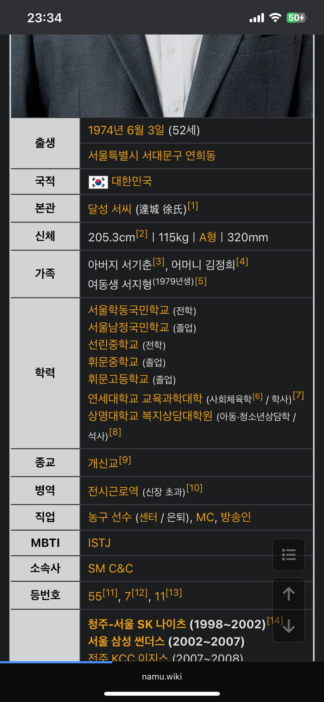

관련분야 석사ㄷㄷ서장훈이 조언 잘하는이유
댓글
석사취득이 19년이니깐
은퇴하고 방송일하면서 공부하신듯?
조언 잘하는지는 모르겠는데
서장훈 하면
맨날 대본대로 딱 패기 알맞게 팔다리 자르고 양념 다 발라서 포장한 게스트한테
일침하는 모습만 떠오름
거의 농구하는 김구라 다 됐음
농구라 ㄷㄷㄷ
긴구라.ㅋㅋ
공구라ㄷㄷㄷ
이젠 농구도 안하는데 김구라 mk.2인가요
factos
농구하‘던’ 김구라가 맞다
분석하는 능력이 좋구나
국영수 위주로 공부하란말을 전교 1등이해서 참아주는것뿐
조언을 잘하는 이미지는 전혀 아닌데....
남들은 참는 말을 확확 뱉는 스타일이라
그저 방송국이 만들어놓은 패기 좋은 사람 팰때 좋은 느낌
상대방을 이해하고 그런거 전혀 안느껴짐
본인 알코올 상담을 받으셨어야
ㄹㅇ 세탁 잘됨 이 아저씨도ㅋㅋ
시대 존나 잘 타고 난건데 너무 나대긴 함. 요즘 현역선수로 음주운전을 2번이나 걸렸다? 바로 다이렉트 나락인데
조언을 잘하는 이미지가 아니라 옆에서 불만섞인 표정으로 틱틱대는 이미지 아닌가
이해는 하지만ㅠㅠ 너무 화가많아
그런데 연대 대학원 안가고 상명대는 왜...? 란 생각이 들기는 하네..
체육으로로 연세대갔는데 연대대학원은 어림도 없지
농구로 우리나라 탑인데 갈려면 얼마든지 들어가지
용인대 출신 체육인들도 연대 대학원 많이 갔는데
다만 연대 상담학쪽은 종교베이스 상담이라서..
상명대 상담학과가 유명하기도 하고 실제로 유명인들이 가장 많이 진학함
중학교, 고등학교, 대학교 전부 농구로만 들어갔는데 학력얘기 나올때마다 자기 공부잘했다는 뉘앙스로 말해서 그렇게 생각했는데 실제로도 공부잘했나봄?
사실상 학벌이 필요 없는 케이스라.. 저걸로 취업할것도 아니고. 프로그램, 교수/친구따라, 집근처 뭐 다양한 이유이지 않았을까
이혼숙려 볼때마다 자기가 결혼생활에 대해 조언할 입장이 되나? 부터 생각남
해본사람이니 더 잘 알지도 모르지
결혼해본사람이 결혼에 대해서 조언한다
이혼해본사람이 이혼에 대해서 조언한다
맞는거 아냐?
결혼 안 해본 사람이 결혼에 대해서 조언한다
이혼 안 해본 사람이 이혼에 대해서 조언한다.
이상하잖아?
명장 축구감독들이 다 선출에다 월클 출신은 아니잖아
격투기 선수로서는 커리어 개ㅈ망인데 코칭 잘하는 사람들 많음 ㅋㅋㅋ
사람같지 않은 새끼들이 나오는거라 솔루션이 아니라
야 너 뭔데?
야 너 병신이야?
야 듣기싫어 닥쳐 되도 않는 말 하지도마
이런식으로 긁어 주는말 하는 역할 아닌가
솔루션은 오은영쌤 같은 사람이 하는거고
ㄹㅇㅋㅋㅋㅋㅋㅋㅋ
"개똥같은 소리하고 있어"
"말같지도 않은 소리하고 있어"
이 말 자주함 ㅋㅋㅋㅋㅋㅋㅋ
패널 줘패는 사이다 역할이긴하지 ㅋㅋ 덩치도 커서 분조장 컨셉들 대놓고 깨기도 하고 ㅋㅋ
서장훈 물어보살만 거의 10년 가까이함ㅋㅋ 이정도면 전문가 수준 맞음
ㅈㄹ ㄴㄴ
병무청 일도 40년하면 전문가다 그치?
음주운전도 전문가지
피디가 하고싶은 예민한 질문이나 말을 대신해주는 느낌이던데 ㅋㅋ
서장훈 잘보면 편집을 엄~~~청 많이 함. 세 마디 하는데 컷이 10개다. 실제로 보니까 말 사이 텀이 엄청 길더라. 편집 후엔 청산유수임.
서장훈도 세탁 다 됐네ㅋㅋㅋㅋ
205cm네 ㄷㄷㄷ
음주운전 2번 범법자는 방송가 1티어로 잘나가고 있고, 막말로 유승준은 범법자도 아닌데 입국금지 ㅋㅋㅋ
걍 돈많은 꼰대자나
와 키가 2미터가 넘네 ㄷㄷ
이숙캠 나오는 사람들 보면 주작인가 의심될 정도로 인간 같지도 않은 사람이 매 회차 나옴
대부분 어줍잖은 조언, 적당히 말로 통할 것 같은 사람이 아니라는 것임
어차피 이호선 상담가, 이광민 정신과 전문의, 김영한 소장 같은 전문가들이 다루는 시간이 따로 있기 때문에
굳이 서장훈이 전문가 포지션을 취할 이유가 없음. 본인의 결혼, 이혼 경력만 가지고 논하기엔
남의 결혼 생활은 상당히 복잡하고 어려운 부분이고
프로그램 내에서의 팩폭은 대부분 상식적인 논리, 누구든 가할 수 있는 일침이고
시청자들이 느끼는 팩폭의 갈증을 대신 해주면서 해소해주는 사이다 역할을 함
서장훈이 선수 시절 승부욕 때문에 꽤나 다혈질 적으로 보였던 모습이나
거대한 풍채, 인상, 직설적 화법 때문인지 일침의 효과가 극대화 되는 것이 방송의 묘미임
서장훈이 그 방송에서 MC를 보는 것이 자연스러워 보이는 건 전문적이어서, 경험에서 우러나와서가 아닌
일 평생 운동만 한 사람 치곤 본인의 철학과 논리가 일관적, 실용적이라 시청자들이 느끼기에도 공감이 잘 되어서임
코카콜라 발언 해주는게 크지. 인터넷에선 누구나 막말할 수 있지만, 얼굴 내놓고 방송용으로 선은 지키되 할 말 하는건 신동엽 섹드립만큼 선을 잘 탄다고 생각함.
아프니깐 청춘이다 같은 소리 안해서 좋음
글쎄 그닥..
서장훈과 출연자, 애초에 각 프로그램 특성들 때문에
수평이 아니라 상하관계부터 나눠 박아놓고 시작하니
그럴싸하게 포장 되는거지
찍어 눌러도 되는 포지션을 방송국에서 제공 했으니,
매사에 공격적이고 따지는식이고 좀 더 수틀리면
출연자들 인신공격에 가깝게 선 타더만..
저러다 한번 나락 코스 타기 시작하면 방송에서 했던
거친 발언들 백종원처럼 끝없이 파묘 되면서 조각조각
가루가 될 정도로 까이겠지
서장훈 특 음주운전 2차례 적발
오 미워하는 애들 많네
저 석사는 어쩌다가 딴거야 40대까지 농구 했다더만